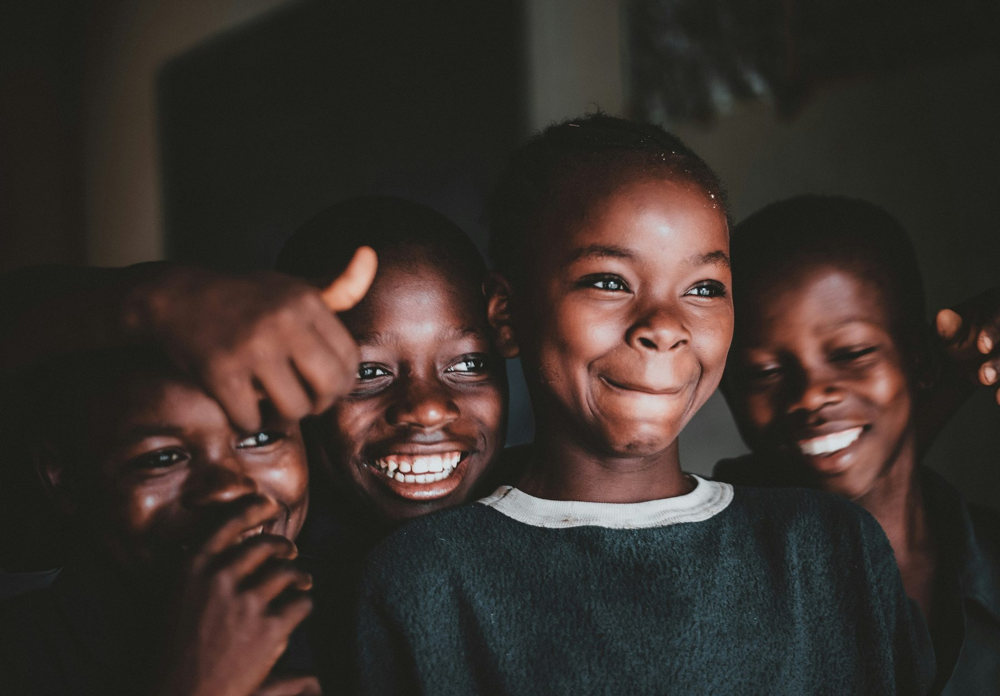
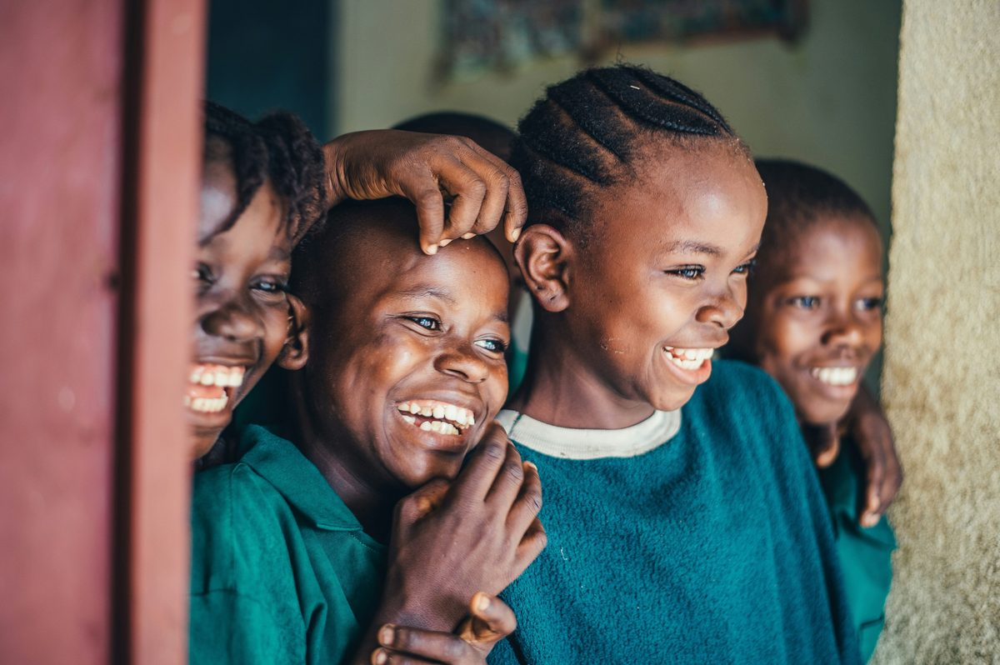

Getting into Senior High School is a real achievement. But even after a student earns their place, the cost of actually starting: uniforms, books, provisions, boarding supplies, can be enough to keep a family from sending them through the door.
In this first pilot round, five incoming Form 1 students will each receive a one time GHS 700 stipend to help cover the costs of starting Senior High School.
Fill out the application with your academic and guardian details before October 1st.
We review applications, confirm details, and call your parent or guardian directly.
Selected students receive GHS 700 by Mobile Money. Since this is our first pilot round, funds may arrive shortly after school has already started, but they can still go toward provisions, boarding costs, and other ongoing needs.
Afrakoma Scholarships started with a simple belief: a student's academic merit should decide their future, not their family's bank account.

This first round is small, five students, funded directly out of pocket, because we wanted to prove the model before asking anyone else to join us.
Every recipient is asked to do one thing in return: remember to pay it forward, whether that means mentoring a younger student, volunteering, or one day funding a stipend of their own.
Incoming Form 1 SHS students in Ghana who have received their placement.
A BECE Placement Letter, Form 1 Admission Letter, and a parent or guardian Ghana Card.
No. It's a one time stipend. There's nothing to repay.
October 1st.
We'll contact your parent or guardian directly by phone if you're shortlisted.
Directly to a Mobile Money account that matches the name on the guardian's Ghana Card or the student's own name.